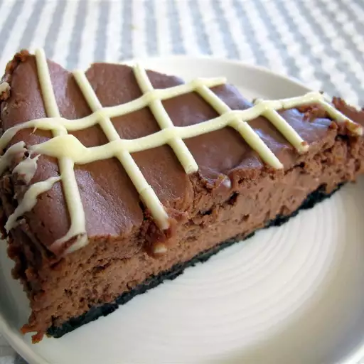

Cheese and cappuccino Cake

Description
This delicious thin crust pizza dough recipe is so low maintenance,
you can throw it together in just 15 minutes.
Ingredients
- 1 cup chocolate cookie crumbs
- ¼ cup softened butter
- 2 tablespoons white sugar
- ¼ teaspoon ground cinnamon
- 3 (8 ounce) packages of cream cheese, softened
- 1 cup white sugar
- 3 eggs
- 8 (1 ounce) squares of semi-sweet chocolate
- 2 tablespoons whipping cream
- 1 cup sour cream
- ¼ teaspoon salt
- 2 teaspoons instant coffee granules dissolved in ¼ cup hot water
- ¼ cup coffee-flavored liqueur
- 2 teaspoons vanilla extract
- 1 cup heavy whipping cream
- 2 tablespoons powdered sugar
- 2 tablespoons coffee-flavored liqueur
- 1 (1 ounce) square of semi-sweet chocolate
Steps
- Preheat oven to 350 degrees F (175 degrees C).
Butter one 9 or 10 inch springform pan.
- Combine the chocolate wafer crumbs, softened butter,
2 tablespoons white sugar, and the cinnamon.
Mix well and press mixture into the buttered springform pan, set aside.
- In a medium sized bowl beat the softened cream cheese until smooth.
Gradually add 1 cup white sugar mixing until well blended.
Add eggs, one at a time. Beat at low speed until very smooth.
- Melt the 8 ounces semisweet chocolate with 2 tablespoons whipping cream
in a pan or bowl set over boiling water, stir until smooth.
- Add chocolate mixture to cream cheese mixture and blend well.
Stir in sour cream, salt, coffee, 1/4 cup coffee liqueur,
and vanilla; beat until smooth. Pour mixture into prepared pan.
- Bake in the center of oven at 350 degrees F (175 degrees C) for 45 minutes.
Center will be soft but will firm up when chilled. Do not over bake.
Leave cake in oven with the heat turned off and the door ajar for 45 minutes.
Remove cake from oven and chill for 12 hours.
Just before serving top cake with mounds of flavored whipped
cream and garnish with chocolate leaves. Yields 16 servings.
- To Make Flavored Whipped Cream: Beat whipping cream until soft peaks form,
then beat in confectioner's sugar and 2 tablespoons coffee liqueur.
- To Make Chocolate Leaves: Melt 1 ounce semisweet chocolate in a pan or bowl set over boiling water,
stir until smooth. Brush real non-toxic plant leaves (such as orange leaves) on one side with melted chocolate.
Freeze until firm and then peel off leaves. Freeze chocolate leaves until needed.